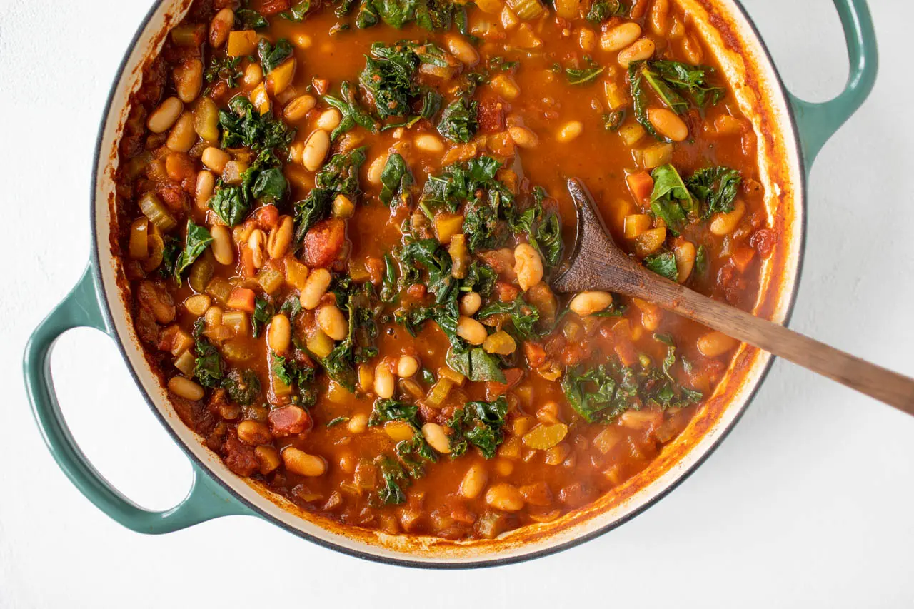

White Bean Chilli

A hearty vegetarian chili that features fresh winter greens and white beans.
Ingredients
- 2 Tbsp extra virgin olive oil
- 4 cloves of garlic, sliced
- 1 medium onion, diced
- 2 stalks of celery, diced
- 2 carrots, peeled & diced
- 1 bell pepper, diced
- 1 Tbsp dried oregano
- 1 Tbsp chili powder
- 2 tsp smoked paprika
- 2 tsp cumin
- 19 oz can of white beans, rinsed and drained
- 28 oz can of pureed or chopped tomatoes
- 4 cups low sodium vegetable or chicken stock
- 12ounces (about 2 bunches) of winter greens, stemmed & torn into pieces
Steps
- In a heavy bottom pot over medium heat add the oil, garlic and onion. Cook until translucent, about 2 minutes.
- Add the celery, carrots, pepper, oregano, chili powder, smoked paprika, cumin, salt and pepper. Cook until the vegetables have softened, about 5 minutes.
- Stir in the beans, tomatoes and stock. Bring to a boil and reduce to a simmer. Cover and continue cooking until thickened, about 45 to 60 minutes.
- Add the winter greens and continue to cook until wilted, about 5 minutes. Season to taste with salt and pepper.
- Transfer to serving bowls and top with cheese, sour cream and tortilla chips.